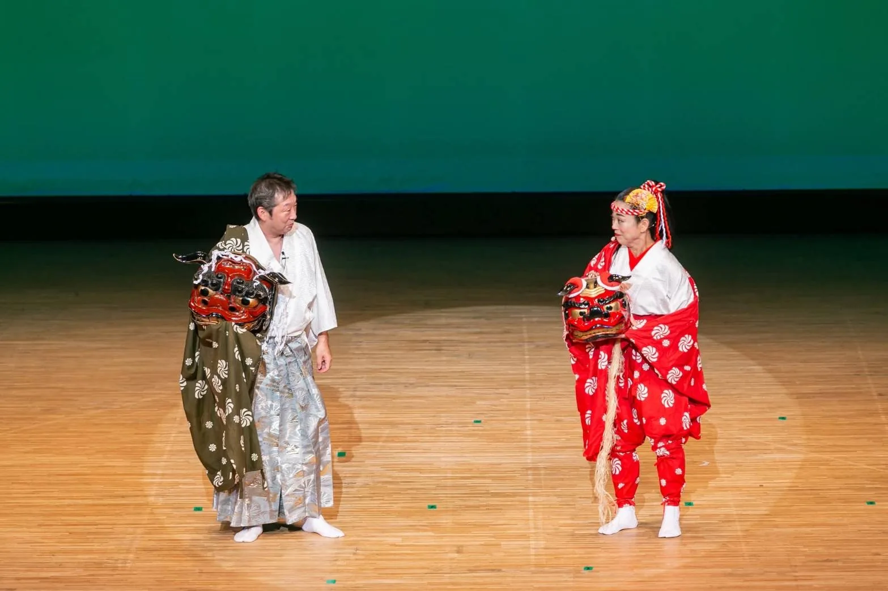

VOICE & COMMUNICATION
声と言葉で、
場をつなぐ。
宮田若奈は20代から司会（MC）の仕事に携わってきました。コミュニティFMのパーソナリティとして、関西で約3年間、宮崎市内で約1年半にわたり活動した経験もあります。
舞台でもマイクの前でも、大切にしてきたのは、その場にいる人と心を通わせることです。
一瞬の出会いを笑顔に変えるために。
プロのちんどん芸、司会・ラジオ、教育・地域活動。
宮田若奈が人と人をつなぎ続けてきた歩み。
ちんどんは、まちに音を届け、人々の関心を呼び、広告を伝えてきた仕事です。
宮田若奈が目指してきたのは、ただ賑やかなだけではない、芸を磨いたプロのちんどん屋。師匠や先輩から学び、ときに厳しい言葉を受けながらも、一人で活動を続け、学びに投資してきました。
笑顔の背景には、
積み重ねてきた学びがある。
宮田さんが語るその言葉には、技術と仕事に対する誇りがあります。

衣装や道具、事務所の維持、そして芸を学ぶ機会。一座を続けるためには、舞台に立つ時間のほかにも積み重ねてきたものがあります。
全国大会への挑戦も、その一つ。宮田さんは約20年にわたって挑戦を重ねてきたと語ります。大会での評価だけでなく、そこで学んだことを持ち帰り、次の舞台に生かしてきました。
尊敬する芸人の影響を受けて始めた合気道は16年、書道は14年。どちらも、鍛錬の方法だけでなく、師匠との出会いや、学んだことを受け継ぐ厳しさを教えてくれた大切な学びです。
芸の世界に限らず、学び続ける姿勢が、宮田若奈の仕事を支えています。
その歩みは、今も続いています。

旧公式HPの記録と、ご本人から伺ったお話をもとにした確認用年表です。
地域の人々と向き合いながら、活動を積み重ねてきました。
旧公式HPに掲載された記録では5位。
旧公式HPに掲載された記録では1位。
宮崎県内のまちを盛り上げる活動を実施。
旧公式HPに掲載された記録では2位。
ご本人のブログに大会参加の記録があります。
司会、ラジオ、教育、子育て支援、地域活動。
プロのちんどん芸と並行して取り組んできた、もう一つの歩みです。
宮田若奈は20代から司会（MC）の仕事に携わってきました。コミュニティFMのパーソナリティとして、関西で約3年間、宮崎市内で約1年半にわたり活動した経験もあります。
舞台でもマイクの前でも、大切にしてきたのは、その場にいる人と心を通わせることです。
兵庫教育大学を卒業し、小学校教諭一種免許状と幼稚園教諭二種免許状を取得。宮崎県の各種審議委員を務め、家庭教育サポートプログラムのトレーナーとして約8年間活動した経験もあります。
子育てをしながら芸を続け、地域の子どもたちのために自宅の庭に遊び場をつくり、週1回の開放を約8年間ボランティアで続けました。学校の学級長や部活動の保護者会会長なども経験しています。
「みやこんじょ大使」第一号、「都農町ふるさと大使」、「都農神社広報大使」としても活動していると伺っています。
芸能の枠を越えて地域を応援し、出会った人々の笑顔につなげていきたい。その思いは、さまざまな活動に通じています。
上記の資格・役職・活動年数は、2026年11月26日に宮田若奈さんからお知らせいただいた内容をもとにした確認用原稿です。正式な名称・期間・掲載可否はご本人と照合後に確定します。
これからは、志をともにする仲間と学び、稽古を重ねながら、プロとして続いていくちんどん屋をつくりたい。お客様も、働く仲間も笑顔でいられる未来を目指して。
仲間とのご縁について ↗